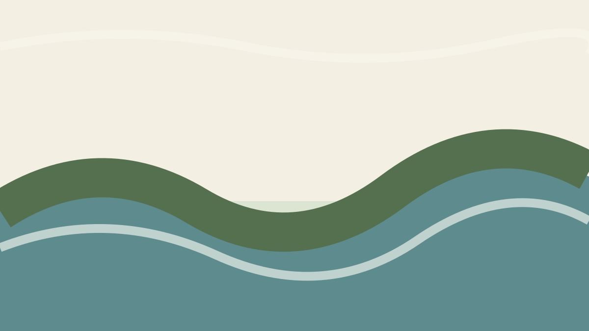
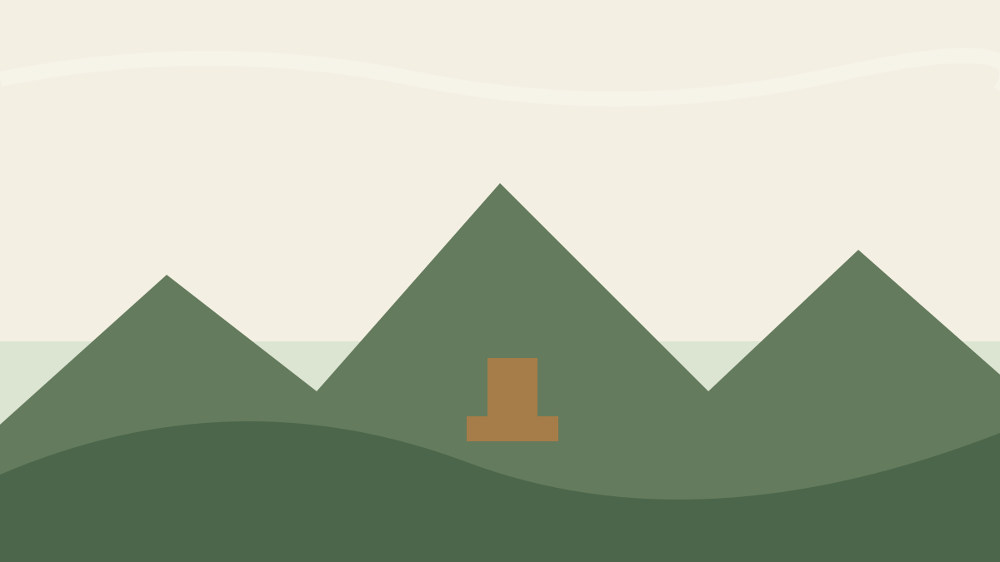
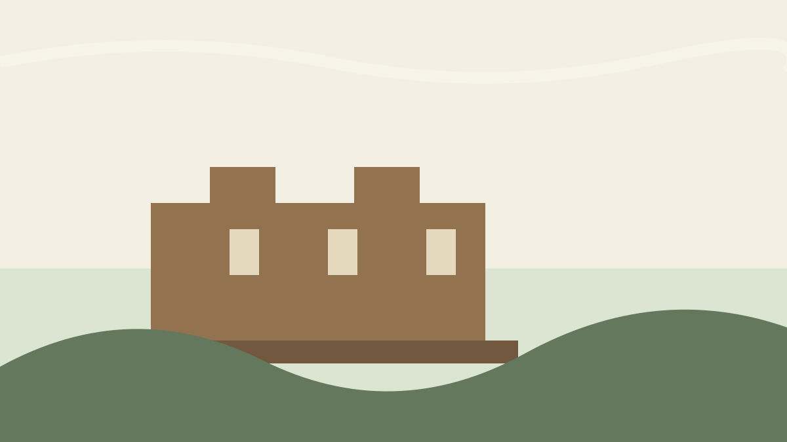
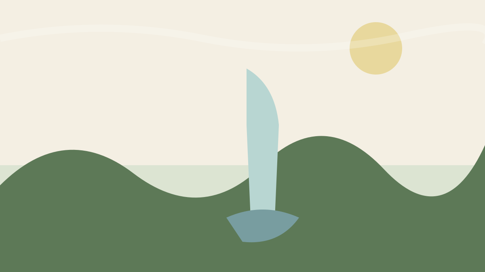
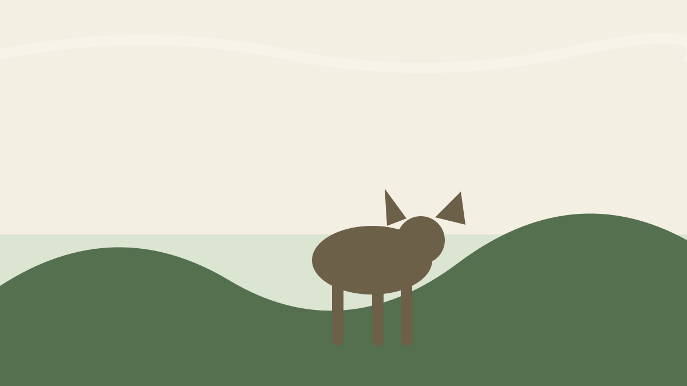
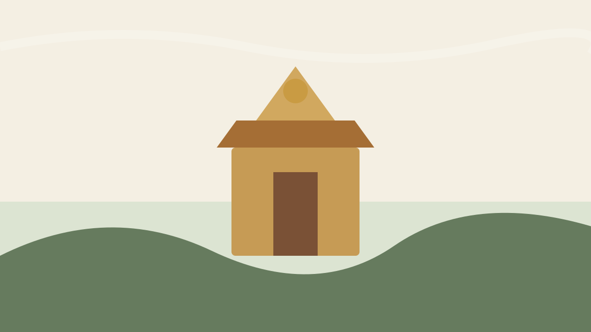

Coffee & nature
Greenway Coffee Island Plantation Tour
A nearby coffee and nature experience where visitors can learn more about Coorg's plantation landscape.
Approx. 11 min drive
View on Google MapsExplore Around Your Stay
From coffee experiences and river islands to waterfalls, viewpoints and Tibetan culture, these are some of the most useful day-trip ideas from The Coorg Chimm's Camptime Homestay.
A nearby coffee and nature experience where visitors can learn more about Coorg's plantation landscape.
Approx. 11 min drive
View on Google Maps
A forested river island on the Cauvery, reached by a bridge and suited to a relaxed nature outing.
Approx. 22 min drive
View on Google MapsA quieter reservoir and dam surrounded by greenery, popular for scenery and photography.
Approx. 24 min drive
View on Google Maps
A well-known Madikeri viewpoint overlooking the surrounding valleys and hills.
Approx. 25 min drive
View on Google Maps
A historic fort and palace complex in Madikeri with a museum and heritage architecture.
Approx. 25 min drive
View on Google MapsA scenic reservoir and dam area that makes a good short outing from the homestay.
Approx. 31–32 min drive
View on Google Maps
A popular waterfall surrounded by coffee estates and greenery near Madikeri.
Approx. 33 min drive
View on Google Maps
A riverside wildlife experience where visitors can learn about and observe elephants.
Approx. 35 min drive
View on Google Maps
A striking Tibetan Buddhist monastery in Bylakuppe, known for its large golden statues and architecture.
Approx. 36 min drive
View on Google MapsA high viewpoint known for sweeping hill views, clouds and popular 4x4 routes.
Approx. 1 hr 21 min drive
View on Google MapsLocal Base
The homestay is in Uluguli Village near Suntikoppa. Google currently places Greenway Coffee Island at about 11 minutes by car and Madikeri's main sights at around 25 minutes, making the property a practical base for exploring both the coffee-country side and Madikeri.
More Planning Help
Send your dates and guest count and enquire about the entire property.